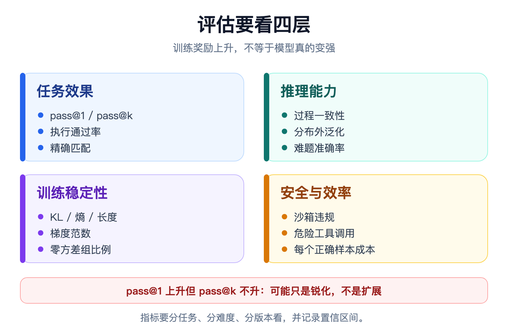
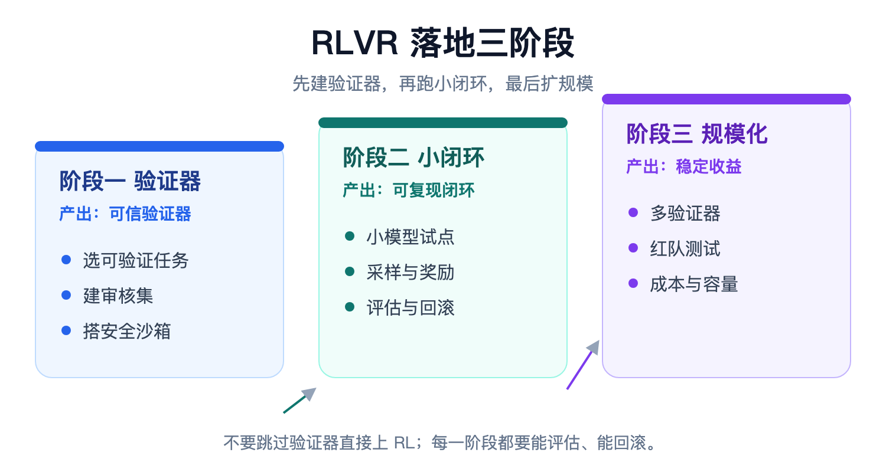

训练奖励上升，不等于模型真的变强
适合读者：准备把 RLVR 落到工程系统的团队
前三篇讲了原理、流程和任务实现。
最后一篇讲三件事：怎么评估，哪些坑最容易踩，以及一个团队应该按什么顺序落地。
先说一个反直觉的结论：
训练奖励持续上升，可能是模型真的变强，也可能是模型学会了利用验证器。
所以 RLVR 的评估，不能只看 reward。
任务效果至少要看四类指标。
| 指标 | 看什么 | 注意 |
|---|---|---|
| Pass@1 | 单次回答正确率 | 最接近线上体验 |
| Pass@k | k 次采样至少一次正确 | 看能力覆盖，不只看命中 |
| 执行通过率 | 代码/工具是否跑通 | 区分编译、运行、超时 |
| 精确匹配 | 答案是否一致 | 先归一化，否则误判 |
推理能力还要看：
训练稳定性看：
安全指标看：
工程效率看：
其中最重要的是 pass@1 和 pass@k 一起看。
pass@1 上升，说明模型更容易一次做对。
pass@k 不升，说明模型可能只是把已有能力“锐化”了，而不是扩展了能力边界。
如果只看训练奖励和单一基准的 pass@1，很容易高估 RLVR 的效果。

图 7：任务、推理、稳定性、安全与效率，四层一起看。
RLVR 的优势很明确。
奖励客观，尤其在数学、代码、结构化输出上。
自动化程度高，可以随采样规模扩展。
适合推理任务，支持“多探索 + 可靠筛选”。
减少人工偏好标注依赖，测试和规则可以复用。
可以和代码执行、SQL、工具环境结合，让奖励更接近真实任务。
但局限同样明确。
| 局限 | 技术原因 | 工程建议 |
|---|---|---|
| 只适合可验证任务 | 开放式写作难有唯一判据 | 与 RLHF/RLAIF 组合 |
| 验证器决定上限 | 假阳性会被策略放大 | 建审核集，测 precision |
| 奖励稀疏 | 难题组内全错，无梯度 | 课程学习、动态采样 |
| 可能 reward hacking | 程序有边界和漏洞 | 隐藏测试、红队、多验证器 |
| 训练成本高 | 采样、验证、RL 都贵 | 小模型试点、缓存、预算 |
| 沙箱复杂 | 执行不可信代码 | 微虚拟机、网络隔离、审计 |
| 可能牺牲多样性 | 策略收敛到高奖励模式 | KL、熵监控、风格回归 |
一句话：RLVR 擅长“正确性”，不擅长“讨喜”。
不要指望一个奖励函数同时解决正确、风格、安全、创造力和成本。
| 误区 | 为什么危险 | 正确做法 |
|---|---|---|
| 有 verifier 就能训好 | 验证器可能漏判、误判 | 先测覆盖率和准确率 |
| 只看最终答案 | 猜中、枚举也会得分 | 加过程检查和扰动测试 |
| 只用二值奖励 | 难题上全是 0 | 课程学习、分级或过程奖励 |
| 公开测试泄漏 | 模型过拟合样例 | 隐藏测试、随机测试 |
| 忽略 KL | 策略漂移、语言退化 | 监控 KL、熵、长度 |
| 忽略 hacking | 奖励上升但能力下降 | 红队、多验证器、抽检 |
| 把 Judge 当真理 | 主观偏差、提示注入 | 规则优先、多裁判、校准 |
| 不做 held-out | 指标虚高，无法判断泛化 | 按来源/时间去重切分 |
| 没有沙箱 | 代码逃逸、密钥泄漏 | 微虚拟机、网络隔离 |
| 认为能替代 RLHF | 语气、安全难以规则化 | 组合使用，按任务路由 |
这些误区的共同根源，是把“奖励信号”当成了“任务目标”。
验证器只是目标的代理。代理和真实目标之间永远有缝隙。
工程上要做的，是持续测量缝隙，而不是假设它不存在。
第一，从结果奖励走向过程奖励。
过程奖励能告诉模型哪一步错了，更适合长链推理。难点是步骤边界、标注成本和过程奖励被利用。
第二，验证器会更强、更组合化。
语法检查、类型检查、单元测试、属性测试、符号计算、SMT、形式化证明，会按成本和置信度分层组合。
第三，与形式化方法结合。
Lean、Coq、Isabelle 提供最高置信度。瓶颈在自动形式化：把自然语言题目转成形式化规约。
第四，与 Agent 环境结合。
文件系统、数据库、API、浏览器、代码仓库，都是可验证环境。关键挑战是保真度、长程信用分配和安全隔离。
第五，多验证器集成。
单一验证器容易被针对。投票、交叉检查、置信度加权，可以降低单点偏差，代价是成本上升。
第六，代码与数学联合训练。
两者都需要精确推理、分步验证和错误回溯，可能互相迁移。数据配比和负迁移需要实验。
第七，RLVR 与合成数据闭环。
强模型生成题目、答案和测试，验证器筛选，再用于训练。要防止重复、有偏和评测污染。
第八，更稳定高效的 RL 算法。
动态采样、clip-higher、token 级损失、长度塑形、异步 rollout，都是围绕“更稳、更省、更长”优化。
第九，安全对齐与可验证奖励结合。
权限、格式、工具调用约束可以写成规则，作为硬约束或强惩罚并入训练。难点是避免过度拒答和规则冲突。
第十，从单轮任务走向长程任务。
多轮对话、多步工具调用、跨文件代码修改、长期 Agent 任务，都需要检查过程、终态、资源消耗和安全边界。
最后，有一类研究值得保持关注：
RL 后的模型 pass@1 更高，但在更大采样预算下，pass@k 是否真的超过基座模型？
如果 RL 只是让模型更稳定地采样到已有正确解，而不是学会全新能力，那么“提升推理能力”的表述就需要更精确。
这些结论仍有争议，但它们提醒我们：评估要看 pass@k、看分布外、看基座对照。

图 8：先建验证器，再跑小闭环，最后扩规模。
如果只能记一句话：
RLVR 的价值，不在于“自动提升智能”，而在于把正确性变成一个可以大规模优化、也可以大规模审计的目标。
系列完